Wikipedia przez 25 lat. Analiza zachowań użytkowników i najpopularniejszych tematów
Prezentacja przygotowana w ramach #BI_NGO, czyli BI dla organizacji pozarządowych (NGO).
Celem projektu było upowszechnienie wiedzy o Wikipedii oraz przedstawienie jej roli w Polsce
na przestrzeni lat. Analiza może stanowić punkt wyjścia do dyskusji o zmianach
w sposobie korzystania z Wikipedii i wpływie najważniejszych wydarzeń na zainteresowanie określonymi tematami.
Skupiłem się na pokazaniu czego szukamy w Wikipedii, kiedy i dlaczego.
Pokazałem, które artykuły cieszą się największym zainteresowaniem, po które kategorie najczęściej sięgamy,
a także momenty w historii powodujące wzrost odwiedzin konkretnych artykułów.
Najważniejsze elementy
-
Narzędzia
Python i biblioteka Pandas do wstępnej obróbki. LLM do kategoryzacji. Power Query do docelowej obróbki oraz PowerPoint do storytellingu. -
Zakres danych
Dla statystyk odsłon artykułów dostępne były dane z ostatnich 10 lat. W dokumentacji Wikipedii znalazłem informację o znaczącym usprawnieniu wykrywania ruchu botów, dlatego zdecydowałem się ograniczyć analizę do ostatnich 8 lat. Przykładowo artykuł „Biblia”, który znalazłby się na 2. miejscu pod względem liczby odsłon w latach 2016–2017, odnotował znaczny ruch botów błędnie sklasyfikowanych jako użytkownicy. -
Kategoryzacja artykułów
Przeprowadzono kategoryzację 300 najpopularniejszych artykułów z wykorzystaniem modelu LLM. Ze względu na bardzo dużą liczbę kategorii stosowanych w Wikipedii, ich bezpośrednie wykorzystanie byłoby mało intuicyjne i utrudniałoby interpretację wyników. -
Dobór wizualizacji
Wybór elementów wizualnych został oparty na charakterze prezentowanych danych. Wykorzystano karty KPI do prezentacji pojedynczych wartości, wykresy słupkowe do porównań oraz wykresy liniowe do analizy trendów w czasie. -
Kolorystyka raportu
Kolorystyka raportu została oparta na identyfikacji wizualnej Wikipedii, aby zachować spójność z tematyką projektu.
Wnioski
- Wikipedia nie jest wyłącznie encyklopedią. To narzędzie pomagające zrozumieć świat wokół nas. Użytkownicy sięgają po nią zarówno w celu pogłębiania wiedzy, jak i zrozumienia wydarzeń wywołujących smutek, strach, ciekawość czy ekscytację.
- Na wzrost liczby wyświetleń artykułów wpływają wydarzenia wywołujące silne emocje, zarówno tragiczne, jak i pozytywne.
- Doniesienia medialne, premiery filmów, seriali oraz innych produkcji popkultury istotnie zwiększają zainteresowanie powiązanymi artykułami.
- Nagłe wzrosty liczby wyświetleń, które nie mają oczywistego uzasadnienia w wydarzeniach zewnętrznych, mogą wskazywać na błędy w klasyfikacji ruchu i stanowić punkt wyjścia do dalszej weryfikacji jakości danych.
Strony prezentacji
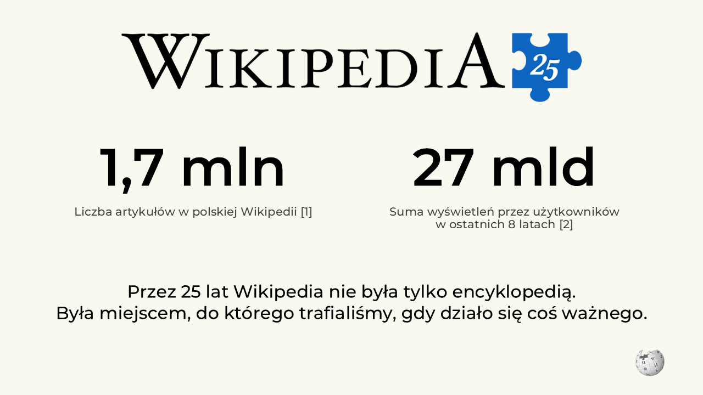
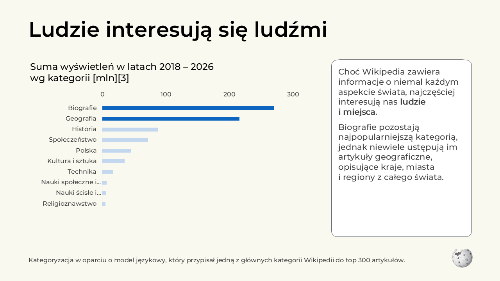
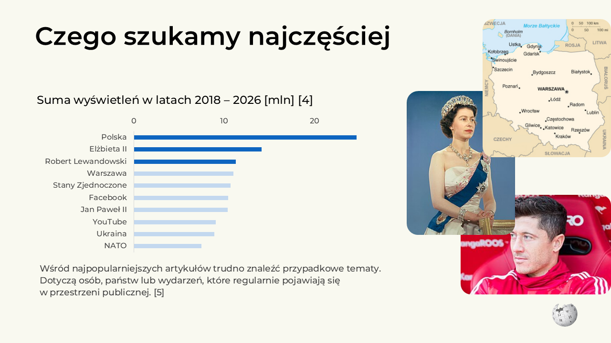
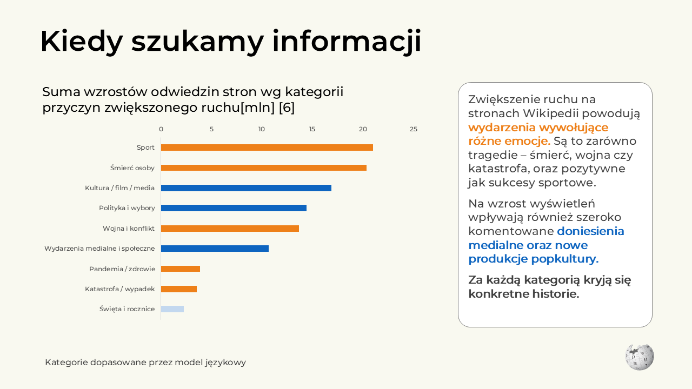
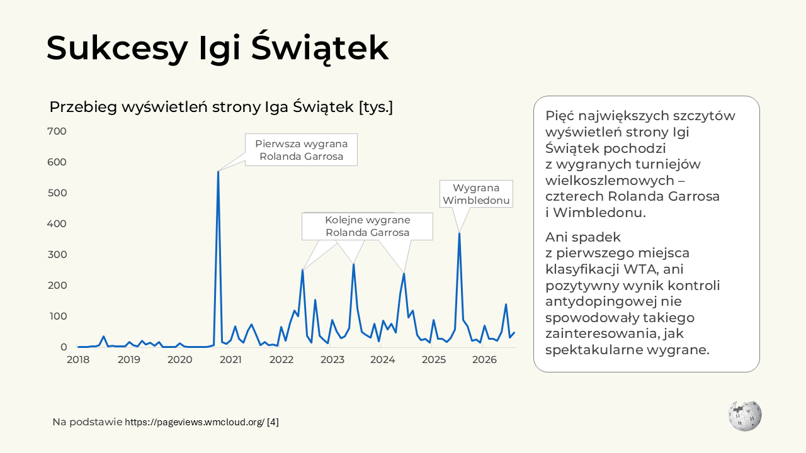
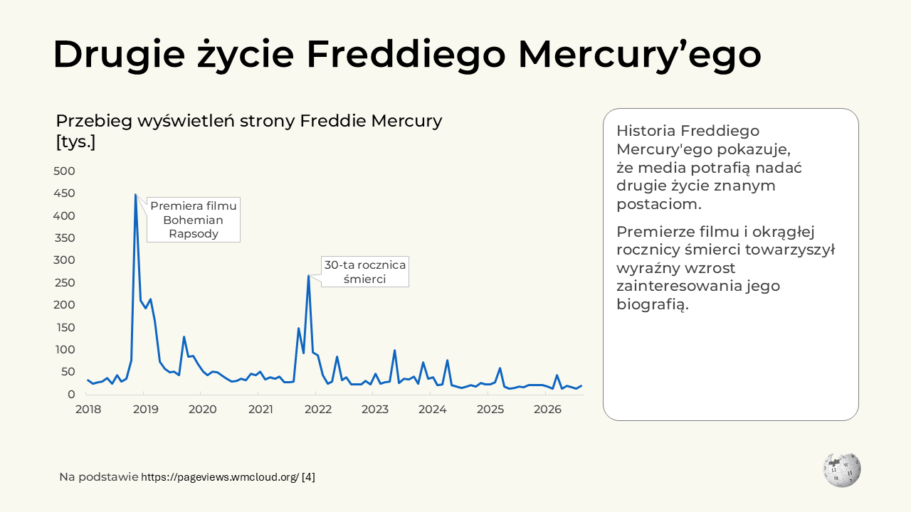
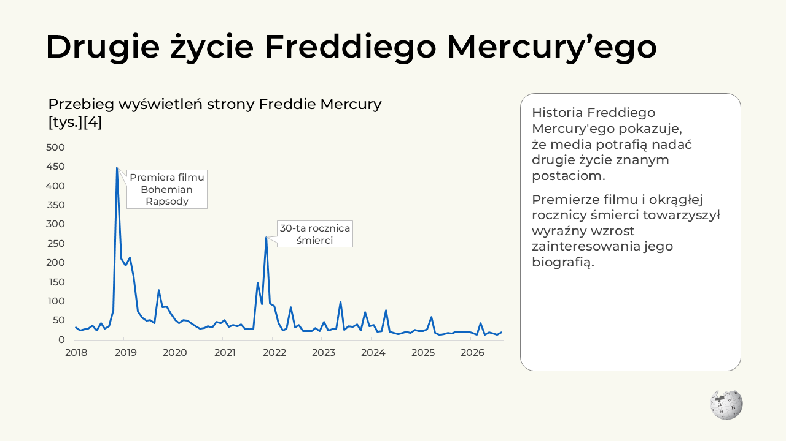
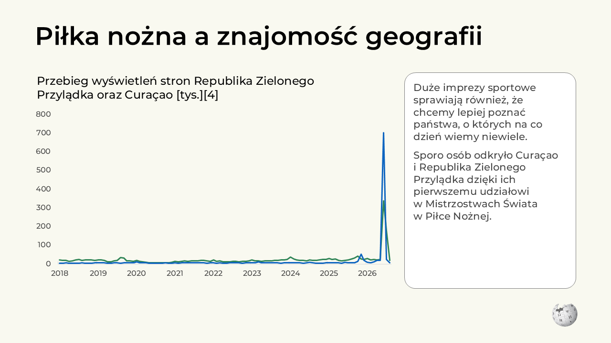
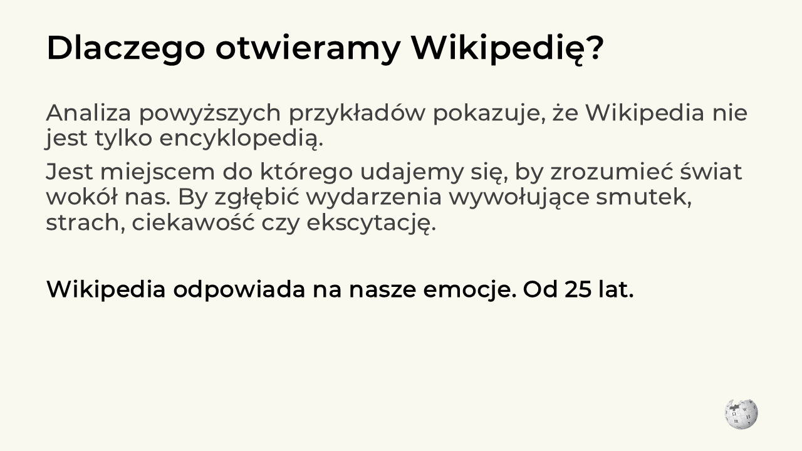
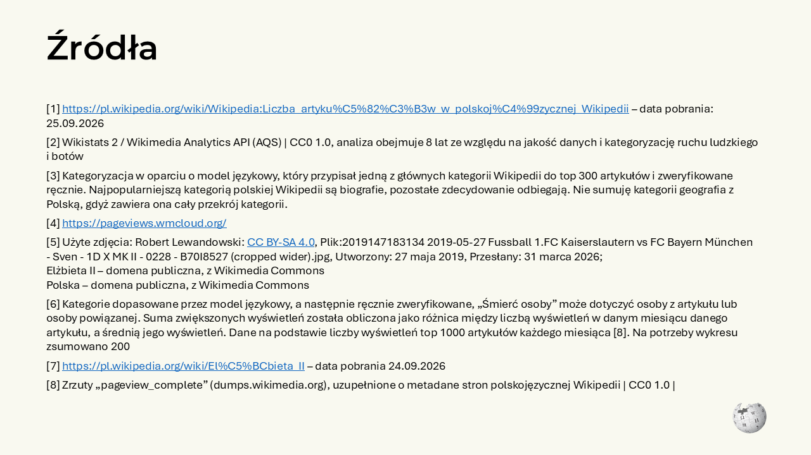
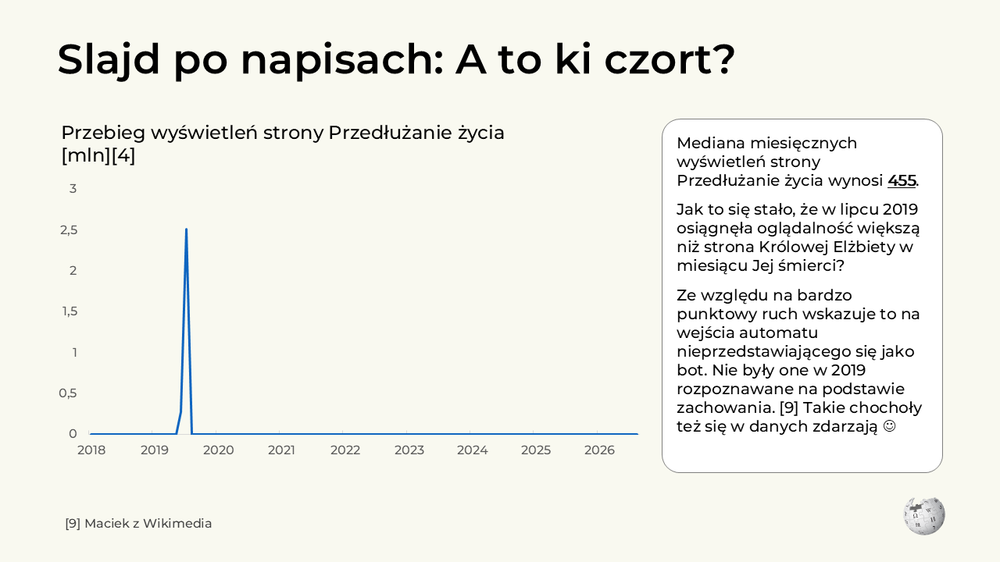